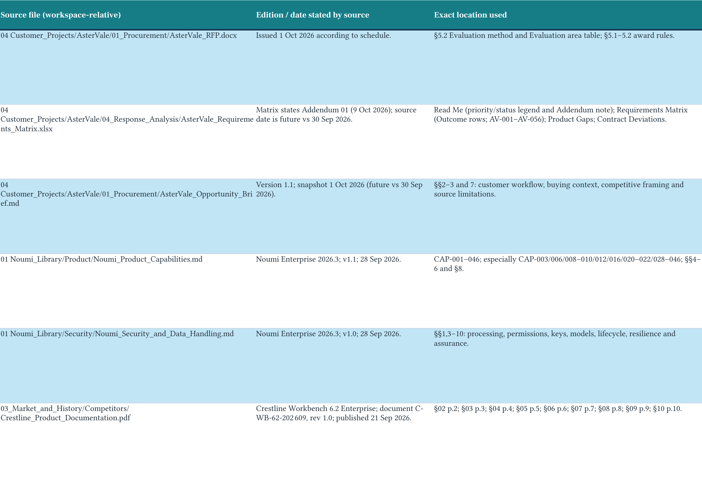

Use AsterVale’s requirements matrix and both products’ documentation to compare Noumi with Crestline Workbench. Create an Excel comparison focused on the customer’s buying priorities, showing where each product fits, its limitations and the trade-offs that matter.
For presales competitive analyses and battlecards, I prefer product versions and evidence sources beside each judgment. Mark capabilities as “Unconfirmed” when the materials do not establish them; don’t infer “Unsupported”. Show both products’ strengths, limitations and material trade-offs objectively.
Noumi
Found 4 files matching AsterVale’s buying priorities to both products’ documented capabilities.
- Buyer requirements:
 AsterVale_Requirements_Matrix.xlsx
AsterVale_Requirements_Matrix.xlsx - Opportunity priorities:
 AsterVale_Opportunity_Brief.md
AsterVale_Opportunity_Brief.md - Noumi capability evidence: Noumi_Product_Capabilities.md
- Crestline capability evidence: Crestline_Product_Documentation.pdf
Noumi remembered your preference

The workbook records each product’s version, source file and exact evidence locations.
Keep product versions and evidence beside competitive judgments. Unconfirmed does not mean Unsupported.
DONECompleted
4 source files selected · 1 deliverable shown. Previews below are rendered from the supplied files.
Prepared the Excel product comparison with buyer priorities, versions, evidence and material trade-offs.
Focus: Noumi’s continuity and editable outputs versus Crestline’s reference governance and provisioning.
The workbook’s Not described means unconfirmed evidence, never proof that a capability is unsupported.
Next: test the critical workflows and access controls, and normalize commercial scope before selection.